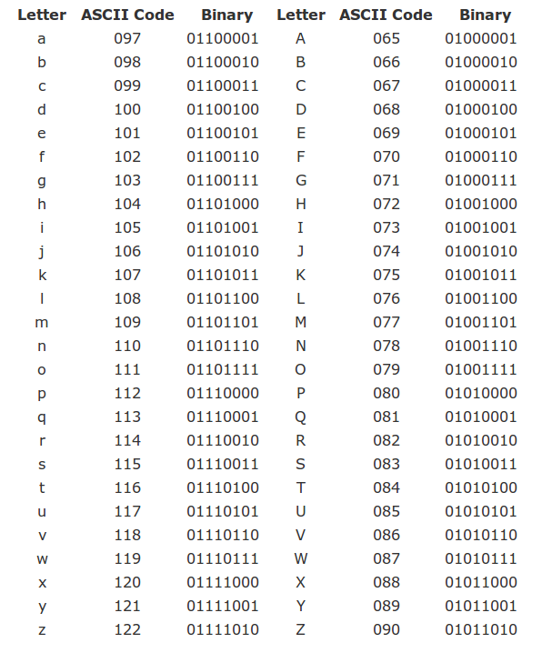

Source Coding
Contents
2. Source Coding¶
In this chapter we take a look at the basic principles and algorithms for data compression.
2.1. The role of coding¶
In the general block diagram of a communication system, the coding block is situated between the information source and the communication channel.
 {width=35%}
{width=35%}
It’s role is to prepare the raw information in order to be transmitted over the channel. It has two main jobs:
Source coding:
Convert source messages to channel symbols, i.e. the actual symbols which the channel knows to transmit.
For example, express the messages in binary form (zeros and ones), for sending over a binary channel.
Minimize the number of symbols needed to be transmitted (i.e., data compression). We don’t want to transmit more symbols than necessary to recover the messages at the receiving end.
Adapt probabilities of symbols in order to maximize to maximize mutual information. We will discuss this more in Chapter IV.
Error control coding
Protect the information against channel errors
Also known as “channel coding”
Basically, source coding refers to all the procedures required to express the source messages as channel symbols in the most efficient way possible, while error control coding refers to all the algorithms used to protect the data against errors.
The coding block has a corresponding decoding block on the receiving end. Its job is to “undo” all the coding operations:
detect and fix the errors in the received data, based on the algorithms introduced by the coding block
convert the channel symbols back into the message representations that the receiver expects
Is it possible to do these two jobs separately, one after another, in two consecutive operations? Yes, as the source-channel separation theorem establishes.
We give below only an informal statement of the theorem:
Theorem 2.1 (Source-channel separation theorem)
It is possible to obtain the best reliable communication by performing the two tasks separately:
Source coding: to minimize number of symbols needed
Error control coding (channel coding): to provide protection against errors happening on the channel
In this chapter, we consider only the source coding algorithms, without any error control. Basically, we assume that data transmission is done over an ideal channel with no noise, and therefore the transmitted symbols are perfectly recovered at the receiver.
In this context, our main concern is how to minimize the number of symbols needed to represent the messages, while making sure that the receiver can decode the messages correctly. The advantages of data compression are self-evident:
Efficiency
Short communication times
Can decode easily
2.2. Definitions¶
Let’s define what coding means from a mathematical perspective.
Consider an input information source with the set of messages:
and suppose we would like to express the messages as a sequence of the following code symbols:
The set \(X\) is known as the alphabet of the code.
For example, for a binary code we have \(X = \lbrace 0, 1\rbrace\) and a possible sequence of symbols is \(c = 00101101\)
Definition 2.1 (Code definition)
A code is a mapping from the set \(S\) of \(N\) messages to a set of \(N\) sequences of symbols, known as codewords:
An example code mapping is given below:
Message |
Codeword |
|
|---|---|---|
\(s_1\) |
\(\rightarrow\) |
\(c_1 = x_1x_2x_1...\) |
\(s_2\) |
\(\rightarrow\) |
\(c_2 = x_1x_2x_2...\) |
\(\dots\) |
\(\rightarrow\) |
\(\dots\) |
\(s_N\) |
\(\rightarrow\) |
\(c_N = x_2x_2x_2...\) |
The codewords are the sequences of symbols used by the code.
The codeword length, which we denote as \(l_i\), is the the number of symbols in a given codeword \(c_i\).
Encoding a given message or sequences of messages means replacing each message with its codeword.
Decoding means deducing back the original sequence of messages, given a sequence of symbols.
As an example, the ASCII code is a widely-used code for encoding characters, consisting of 256 codewords (stored on 1 byte):

Nowadays, ASCII is usually replaced by Unicode (UTF-8), which is a more general code using 65536 codewords (stored on 2 bytes), allowing for many more letters used in languages around the globe.
2.2.1. The graph of a code¶
The codewords of a code can represented as a binary tree. We call this representation the graph of the code.
Example at blackboard
2.2.2. Average code length¶
Consider a code for the messages of a discrete memoryless source. There are many ways to define the codewords and their mapping to messages.
How to measure representation efficiency of a code? We need this, for example, in order to choose the most efficient code out of all possible codes we might define.
The most basic quantity indicating efficiency of a code is the average code length.
Definition 2.2 (Average code length)
Given a code, the average code length is the average of the codeword lengths:
Here, for every codeword \(c_i\) we consider its probability to be the probability of the corresponding message \(p(s_i)\), and its length \(l_i\).
A code with smaller average length is better, because it represents sequences of messages with less symbols, on average. However, we expect a certain lower limit to the average length (for example, it cannot be 0, for self-evident reasons). This raises the following interesting question:
Given a source \(S\), how small can the average length be?
This is a fundamental question, to which we will provide an answer later in this chapter.
2.2.3. Instantaneous codes¶
We introduce another set of useful definitions regarding the codeword structure.
A code is:
non-singular: all codewords are different
uniquely decodable: for any received sequence of symbols, there is only one corresponding sequence of messages
i.e. no sequence of messages produces the same sequence of symbols
i.e. there is never a confusion at decoding
instantaneous (also known as prefix-free): no codeword is prefix to another code
A prefix = a codeword which is the beginning of another codeword
Examples: at the blackboard
The follwing relations exist between these types of codes.
Theorem 2.2 (Instantaneous codes are uniquely decodable)
An instantaneous code is uniquely decodable
Proof. There is exactly one codeword matching the beginning of the sequence:
Suppose the true initial codeword is c
There can’t be a shorter codeword c’, since it would be prefix to c
There can’t be a longer codeword c’’, since c would be prefix to it
Once we find the first codeword, write down the corresponding message and remove the codeword from the sequence.
The remaining part is another sequence and, by the same argument, there is exactly one codeword matching the new beginning, and so on.
Note
The converse is not necessary true; there exist uniquely decodable codes which are not instantaneous.
Theorem 2.3 (Uniquely decodable codes are non-singular)
An uniquely decodable code is non-singular
Proof. The proof is by contradiction:
If the code is singular, some codewords are not unique (different messages have the same codeword)
This means that at decoding we can’t decide which of those messages is there. This means that the code is not uniquely decodable
Therefore, if the code is uniquely-decodable, it must also be non-singular (\(A \rightarrow B \Leftrightarrow \overline{B} \rightarrow \overline{A}\))
We can summarize the relation between these three code types as follows:
Instantaneous \(\subset\) uniquely decodable \(\subset\) non-singular
2.2.4. Graph-based decoding of instantaneous codes¶
Using the graph of the code, we can use a very simple procedure for decoding any instantaneous code:
Algorithm 2.1 (Graph-based decoding of instantaneous codes)
Inputs An input symbol sequence, the graph of an instantaneous code
Output The decoded message sequence
Start at the root of the tree graph
Follow the edges in the tree according to the next symbols in the sequence
When a message is reached in the tree, write it down and go back to the root
Continue until the end of the symbol sequence
TBD: Illustrate at whiteboard
This procedure shows the advantage of instantaneous codes over other codes which might be uniquely decodable, but are not instantaneous: instantaneous codes allow for simple decoding. There is never any doubt about the next message in the sequence.
This decoding scheme is also showing why these codes are named “instantaneous”: a codeword can be decoded as soon as it is fully received, immediately, without any delay.
As a counter example, consider the following uniquely decodable, but non-instantaneous code: \(\left\lbrace 0, 01, 011, 1110 \right\rbrace\). When you read the first \(0\), you cannot decode it yet, because you need to wait the next bits to understand how to segment the sequence. This implies that the decoding has some delay.
2.2.5. The Kraft inequality theorem¶
When can an instantaneous code exist? Given a DMS \(S\), are we sure we can find an instantaneous code for it, and if yes, under which conditions?
The answers to these questions is provided by the Kraft inequality.
Theorem 2.4 (Kraft inequality theorem)
Given a code alphabet of \(D\) symbols, there exists an instantaneous code with codeword lengths \({l_1, l_2, \ldots l_n}\) if and only if the lengths satisfy the following inequality:
Proof. At blackboard
Comments on the Kraft inequality:
If lengths do not satisfy the relation, no instantaneous code exists with these lengths
If the lengths of a code satisfy the relation, that code can be instantaneous or not (there exists an instantaneous code, but not necessarily that one). Keep in mind that the Kraft inequality only looks at the lengths of the codewords, not at their actual symbols, so it can only say something about the lengths, not about the actual codewords
The Kraft inequality implies that the codewords lengths cannot be all very small, because if all \(l_i\) values are too small the sum exceeds 1. Thus, implicitly, it sets a lower limit to the permissible lengths.
From the proof, it follows that we have equality in the relation
\[ \sum_i D^{-l_i} = 1\]only if the lowest level of the tree is fully covered. Thus, for an instantaneous code which satisfies Kraft with equality, all the graph branches terminate with codewords and there are no unused branches.
This makes sense intuitively, since is most economical way: codewords are as short as they can be. Any unused branch means that we can actually make the code shorter by moving some message up the tree.
We have seen that instantaneous codes must obey the Kraft inequality But how about uniquely decodable codes? The answer is given by the next theorem.
Theorem 2.5 (McMillan theorem)
Any uniquely decodable code also satisfies the Kraft inequality:
Proof. No proof given
Consequences of the McMillan theorem:
For every uniquely decodable code, there exists in instantaneous code with the same lengths. This is because the lengths \(l_i\) must satisfy the same relation both for unique-decodable and for instantanous codes.
Thus, even though the class of uniquely decodable codes is larger than that of instantaneous codes (because any instantaneous code is uniquely decodable, but not any uniquely decodable code is instantaneous), using uniquely-decodable codes brings no additional benefit in average codeword length
Instead of an uniquely decodable code, we can always use an instantaneous code, which has the same lengths, but is much easier to decode.
2.2.6. Finding an instantaneous code for given lengths¶
How to find codewords with code lengths \(\{l_i\}\)?
In general, we may use the following procedure:
Algorithm 2.2
Check that lengths satisfy Kraft relation
Draw graph with the specified lengths
Assign codewords to the graph terminations
Note that this procedure only gives us the codewords, not the mapping to a particular set of messages.
In practice, there might be more elaborate ways to find the codewords and map them to the messages of the source, with additional benefits.
2.2.7. Optimal codes¶
We will discuss now one of the most important aspect of this chapter,
Given a DMS \(S\), suppose we want to find an instantenous code for it, but in such a way as to minimize the average length of the code:
How can we find such an optimal code?
Given that it should be instantaneous, the codeword lengths must obey the Kraft inequality.
In mathenatical terms, we formulate the problem as a constrained optimization problem:
This means that we want to find the unknowns \(l_i\) in order to minimize a certain quantity (\(\sum_i p(s_i) l_i\)), but the unknowns must satisfy a certain constraint (\(\sum_i D^{-l_i} \leq 1\)).
The method of Lagrange multipliers¶
To solve this problem, we use a standard mathematical tool known as the method of Lagrange multipliers.
Definition 2.3 (Lagrange multipliers for constrained optimization problems)
To solve the following constrained optimization problem:
one must build a new function \(L(x, \lambda)\) (known as the Lagrangean function):
The solution \(x\) of the original problem is among the solutions of the system:
If there are multiple variables \(x_i\) in the problem, we take the partial derivative \(\frac{\partial L(x, \lambda)}{\partial x_i}\) for each one of them, resulting in a larger system.
Let’s use this mathematical formulation to our problem. In our case, the functions and the variables involved are the following:
The unknowns \(x_i\) are the lengths \(l_i\)
The function to minimize is \(f(x) = f(l_i) = \overline{l} = \sum_i p(s_i) l_i\)
The constraint is \(g(x) = g(l_i) = \sum_i D^{-l_i} - 1\)
Note
Note 1 The method of Lagrange multipliers, as presented below, specifies an equality constraint:
But in our optimization problem, we have an inequality constraint (\(\leq\) instead of \(=\)):
However, as we discussed earlier, having the Kraft inequality smaller than \(1\) means that we have some coding inefficiency, since some branches of the graph code remaining unconnected. When we seek to minimize the average length, this cannot happen. For this reason, we can safely use equality here in the Kraft constraint:
Note
Note 2 A keen reader might observe a requirement which our optimization problem does not take into account: the variables \(l_i\) cannot just take any value, they must be positive integers, since they are the length of some codewords.
We will discuss this problem in the next paragraphs.
TBD: Solve at blackboard
The resulting optimal codeword lengths are:
Theorem 2.6
The optimal codeword lenghts \(l_i\) for the messages of a DMS in order to minimize the average codeword length \(\overline{l}\) are:
Let us discuss some intuitions and consequences related to this result:
Using \(l_i = -\log(p(s_i))\) satisfies Kraft with equality, so the lengths cannot be any shorter than that, in general:
\[ \textrm{subject to } \sum_i D^{-(-\log(p(s_i))))} = 1 \]A message with higher probability must have a shorter codeword, while a message with lower probability has a longer codeword. This makes sense because messages we can afford to use a longer codeword for messages which appear rarely in a sequence.
2.2.8. Entropy = minimal codeword average length¶
If the optimal values are: $\(l_i = -\log(p(s_i))\)$
Then the minimal average length is: $\(\min \overline{l} = \sum_i p(s_i) l_i = -\sum_i p(s_i) \log(p(s_i)) = H(S)\)$
The entropy of a source = the minimum average length necessary to encode the messages
e.g. the minimum number of bits required to represent the data in binary form
2.2.9. Meaning of entropy¶
This tells us something about entropy
This is what entropy means in practice
Small entropy => can be written (encoded) with few bits
Large entropy => requires more bits for encoding
This tells us something about the average length of codes
The average length of an uniquely decodable code must be at least as large as the source entropy $\(H(S) \leq \overline{l}\)$
One can never represent messages, on average, with a code having average length less than the entropy
2.2.10. Analogy of entropy and codes¶
Analogy: 1 liter of water
1 liter of water = the quantity of water that can fit in any bottle of size \(\geq\) 1 liter, but not in any bottle \(<\) 1 liter $\(Bottle \geq water\)$
Information of the source = the water
The code used for representing the messages = the bottle that carries the water $\(\overline{l} \geq H(S)\)$
2.2.11. Efficiency and redundancy of a code¶
Efficiency of a code (\(M\) = size of code alphabet): $\(\eta = \frac{H(S)}{\overline{l} \log{M}}\)$
usually \(M\) = 2 so \(\eta = \frac{H(S)}{\overline{l}}\)
but if \(M>2\) a factor of \(\log{M}\) is needed because \(H(S)\) in bits (binary) but \(\overline{l}\) not in bits (M symbols)
Redundancy of a code: $\(\rho = 1- \eta\)$
These measures indicate how close is the average length to the optimal value
When \(\eta = 1\): optimal code
2.2.12. Optimal codes¶
Problem: \(l_i = -\log(p(s_i))\) might not be an integer number
but the codeword lengths must be natural numbers
An optimal code = a code that attains the minimum average length \(\overline{l} = H(S)\)
An optimal code can always be found for a source where all \(p(s_i)\) are powers of 2
e.g. \(1/2\), \(1/4\), \(1/2^n\), known as dyadic distribution
the lengths \(l_i = -\log(p(s_i))\) are all natural numbers => can be attained
the code with lengths \(l_i\) can be found with the graph-based procedure
2.2.13. Non-optimal codes¶
What if \(-\log(p(s_i))\) is not a natural number? i.e. \(p(s_i)\) is not a power of 2
Shannon’s solution: round to next largest natural number $\(l_i = \lceil -\log(p(s_i)) \rceil\)$
i.e. \(-\log(p(s_i)) = 2.15\) => \(l_i = 3\)
2.2.14. Shannon coding¶
Shannon coding:
Arrange probabilities in descending order
Use codeword lengths \(l_i = \lceil -\log(p(s_i)) \rceil\)
~~Find any instantaneous code for these lengths \(^{*}\)~~
For every message \(s_i\):
compute the sum of all the probabilities up to this message
multiply this value with \(2^{l_i}\)
floor the result and convert to binary
The code obtained = a “Shannon code”
Simple scheme, better algorithms are available
Example: compute lengths for \(S: (0.9, 0.1)\)
But still enough to prove fundamental results
2.2.15. Average length of Shannon code¶
Theorem:
The average length of a Shannon code satisfies $\(H(S) \leq \overline{l} < H(S) + 1\)$
2.2.16. Average length of Shannon code¶
Proof:
The first inequality is because H(S) is minimum length
The second inequality: a. Use Shannon code: $\(l_i = \lceil -\log(p(s_i)) \rceil = -\log(p(s_i)) + \epsilon_i\)\( where \)0 \leq \epsilon_i < 1$
a. Compute average length: $\(\overline{l} = \sum_i p(s_i) l_i = H(S) + \underbrace{\sum_i p(s_i) \epsilon_i}_{< 1}\)\( a. Since \)\epsilon_i < 1\( => \)\sum_i p(s_i) \epsilon_i < \sum_i p(s_i) = 1$ \qed
2.2.17. Average length of Shannon code¶
Average length of Shannon code is at most 1 bit longer than the minimum possible value
That’s quite efficient
There exist even better codes, in general
Q: Can we get even closer to the minimum length?
A: Yes, as close as we want!
In theory, at least … :)
See next slide.
2.2.18. Shannon’s first theorem¶
Shannon’s first theorem (coding theorem for noiseless channels):
It is possible to encode an infinitely long sequences of messages from a source S with an average length as close as desired to H(S), but never below H(S)
\ \
Key points:
we can always obtain \(\overline{l} \to H(S)\)
for an infinitely long sequence
2.2.19. Shannon’s first theorem¶
Proof:
Average length can never go below H(S) because this is minimum
How can it get very close to H(S) (from above)?
Use \(n\)-th order extension \(S^n\) of S
Use Shannon coding for \(S^n\), so it satisfies $\(H(S^n) \leq \overline{l_{S^n}} < H(S^n) + 1\)$
But \(H(S^n) = n H(S)\), and average length per message of \(S\) is $\(\overline{l_{S}} = \frac{\overline{l_{S^n}}}{n}\)\( because messages of \)S^n\( are just \)n\( messages of \)S$ glued together
So, dividing by \(n\): $\(\boxed{H(S) \leq \overline{l_{S}} < H(S) + \frac{1}{n}}\)$
If extension order \(n \to \infty\), then $\(\overline{l_{S}} \to H(S)\)$ \qed
2.2.20. Shannon’s first theorem¶
Analogy: how to buy things online without paying for delivery :)
FanCourier taxes 15 lei per delivery
not efficient to buy something worth a few lei
How to improve efficiency? Buy \(n\) things bundled together!
The delivery cost per unit is now \(\frac{15}{n}\)
As \(n \to \infty\), the delivery cost per unit \(\to 0\)
What’s 15 lei when you pay \(\infty\) lei…
2.2.21. Shannon’s first theorem¶
Comments:
Shannon’s first theorem shows that we can approach H(S) to any desired accuracy using extensions of large order of the source
This is not practical: the size of \(S^n\) gets too large for large \(n\)
Other (better) algorithms than Shannon coding are used in practice to approach \(H(S)\)
2.2.22. Coding with the wrong code¶
Consider a source with probabilities \(p(s_i)\)
We use a code designed for a different source: \(l_i = -\log(q(s_i))\)
The message probabilities are \(p(s_i)\) but the code is designed for \(q(s_i)\) \
Examples:
design a code based on a sample data file (like in lab)
but we use it to encode various other files => probabilities might differ slightly
e.g. design a code based a Romanian text, but encode a text in English \
What happens?
2.2.23. Coding with the wrong code¶
We lose some efficiency:
Codeword lengths \(\overline{l_i}\) are not optimal for our source => increased \(\overline{l}\)
If code were optimal, best average length = entropy \(H(S)\): $\(\overline{l_{optimal}} = -\sum{p(s_i) \log{p(s_i)}}\)$
But the actual average length we obtain is: $\(\overline{l_{actual}} = \sum{p(s_i) l_i} = -\sum{p(s_i) \log{q(s_i)}}\)$
2.2.24. The Kullback–Leibler distance¶
Difference between average lengths is:
The difference = the Kullback-Leibler distance between the two distributions
is always \(\geq 0\) => improper code means increased \(\overline{l}\) (bad)
distributions more different => larger average length (worse)
The KL distance between the distributions = the number of extra bits used because of a code optimized for a different distribution \(q(s_i)\) than the true distribution of our data \(p(s_i)\)
2.2.25. The Kullback–Leibler distance¶
Reminder: where is the Kullback–Leibler distance used
Here: Using a code optimized for a different distribution:
Average length is increased with \(D_{KL}(p || q)\)
In chapter IV (Channels): Definition of mutual information:
Distance between \(p(x_i \cap y_j)\) and the distribution of two independent variables \(p(x_i) \cdot p(y_j)\) $\(I(X,Y) = \sum_{i,j} p(x_i \cap y_j) \log(\frac{p(x_i \cap y_j)}{p(x_i)p(y_j)})\)$
2.2.26. Shannon-Fano coding (binary)¶
Shannon-Fano (binary) coding procedure:
Sort the message probabilities in descending order
Split into two subgroups as nearly equal as possible
Assign first bit \(0\) to first group, first bit \(1\) to second group
Repeat on each subgroup
When reaching one single message => that is the codeword
Example: blackboard
Comments:
Shannon-Fano coding does not always produce the shortest code lengths
Connection: yes-no answers (example from first chapter)
2.2.27. Huffman coding (binary)¶
Huffman coding procedure (binary):
Sort the message probabilities in descending order
Join the last two probabilities, insert result into existing list, preserve descending order
Repeat until only two messages are remaining
Assign first bit \(0\) and \(1\) to the final two messages
Go back step by step: every time we had a sum, append \(0\) and \(1\) to the end of existing codeword
Example: blackboard
2.2.28. Properties of Huffman coding¶
Properties of Huffman coding:
Produces a code with the smallest average length (better than Shannon-Fano)
Assigning \(0\) and \(1\) can be done in any order => different codes, same lengths
When inserting a sum into an existing list, may be equal to another value => options
we can insert above, below or in-between equal values
leads to codes with different individual lengths, but same average length
Some better algorithms exist which do not assign a codeword to every single message (they code a while sequence at once, not every message)
2.2.29. Huffman coding (M symbols)¶
General Huffman coding procedure for codes with \(M\) symbols:
Have \(M\) symbols \(\left\lbrace x_1, x_2, ... x_M \right\rbrace\)
Add together the last \(M\) symbols
When assigning symbols, assign all \(M\) symbols
Important: at the final step must have \(M\) remaining values
May be necessary to add virtual messages with probability 0 at the end of the initial list, to end up with exactly \(M\) messages in the last step
Example : blackboard
2.2.30. Example: compare Huffman and Shannon-Fano¶
Example: compare binary Huffman and Shannon-Fano for: $\(p(s_i) = \left\lbrace 0.35, 0.17, 0.17, 0.16, 0.15 \right\rbrace\)$
2.2.31. Probability of symbols¶
For every symbol \(x_i\) we can compute the average number of symbols \(x_i\) in a code $\(\overline{l_{x_i}} = \sum_i p(s_i) l_{x_i}(s_i)\)$
\(l_{x_i}(s_i) =\) number of symbols \(x_i\) in the codeword of \(s_i\)
e.g.: average number of 0’s and 1’s in a code
Divide by average length => probability (frequency) of symbol \(x_i\) $\(p(x_i) = \frac{\overline{l_{x_i}}}{\overline{l}}\)$
These are the probabilities of the input symbols for the transmission channel
they play an important role in Chapter IV (transmission channels)
2.2.32. Source coding as data compression¶
Consider that the messages are already written in a binary code
Example: characters in ASCII code
Source coding = remapping the original codewords to other codewords
The new codewords are shorter, on average
This means data compression
Just like the example in lab session
What does data compression remove?
Removes redundancy: unused bits, patterns, regularities etc.
If you can guess somehow the next bit in a sequence, it means the bit is not really necessary, so compression will remove it
The compressed sequence looks like random data: impossible to guess, no discernable patterns
2.2.33. Discussion: data compression with coding¶
Consider data compression with Shannon or Huffman coding, like we did in lab
What property do we exploit in order to obtain compression?
How does compressible data look like?
How does incompressible data look like?
What are the limitation of our data compression method?
How could it be improved?
2.2.34. Other codes: arithmetic coding¶
Other types of coding do exist (info only)
Arithmetic coding
Adaptive schemes
etc.
2.2.35. Chapter summary¶
Average length: \(\overline{l} = \sum_i p(s_i) l_i\)
Code types: instantaneous \(\subset\) uniquely decodable \(\subset\) non-singular
All instantaneous or uniqualy decodable code must obey Kraft: $\( \sum_i D^{-l_i} \leq 1\)$
Optimal codes: \(l_i = -\log(p(s_i))\), \(\overline{l_{min}} = H(S)\)
Shannon’s first theorem: use \(n\)-th order extension of \(S\), \(S^n\): $\(\boxed{H(S) \leq \overline{l_{S}} < H(S) + \frac{1}{n}}\)$
average length always larger, but as close as desired to \(H(S)\)
Coding techniques:
Shannon: ceil the optimal codeword lengths (round to upper)
Shannon-Fano: split in two groups approx. equal
Huffman: group last two. Is best of all.